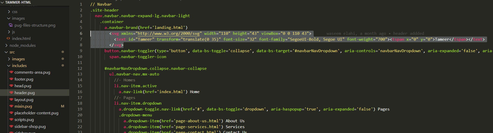
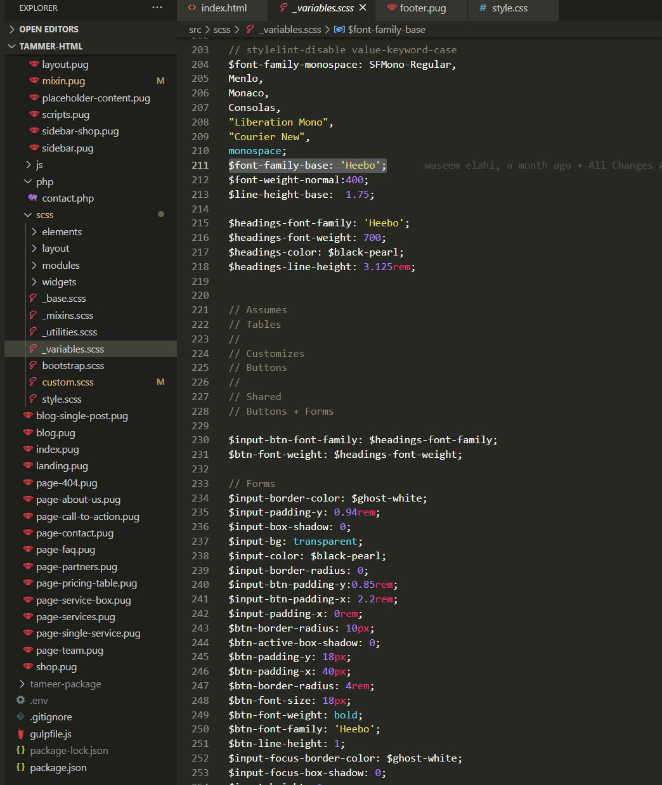

Before getting started you must have knowledge about Node js, gulpjs and adequate knowledge about SCSS and .pug https://pugjs.org/
If you aren’t familiar with pug, you can still manage your way through this. But if you not, read up on it. I recommend learning pug with pugs. Or from their docs.
Oganic template is Bootstrap v5 base. Before getting started you must have knowledge about Bootstrap
Oganic /
src/
├── images/
├── includes/
├── php/
├── scripts/
├── app/
├── vendor/
├── scss/
├── blocks/
├── layout/
├── modules/
├── base.scss
├── _mixins.scss
├── _variables.scss
├── bootstrap.scss
├── style.scss
├── **.pug files
└── webpack.config
├── gulpfile.js
├── package.json
Let's see what's inside each directory and what are the pupose of each one.
src/Contains all *.pug development files that are going to convert in HTML into
_demo/ and
_dist/ driectory.
src/imagesThis folder houses your image files that you want to use in your template, such as logo, favicon, etc.
src/phpThis directory contains all the PHP files which is somehow required for functionality of template, such as sending emails for contact us page.
src/includesContains pug file compnents that we are going to use in src/ driectory for *.pug files.
src/jsThis directory contains all the JavaScript files which is somehow required for functionality of template.
global.js
contains third-part plugin call funcations and other tasks.
src/scssContains scss file that that will bundle and convert into css into _demo/assets/style
driectory. To
modify template style you can edit src/scss scss files each file named after elements.
_variables.scss
contain variables like text color and size for scss elements.
Long story short. In static HTML If you have to change header nav link or some text from footer and you have more then 100 files. You will have to open each file to modfiy that will drive you crazy. But pug save us from this problem.
I recommend learning pug with pugs. Or their docs.
We are going to write our header code in header.pug and then going to import
header.pug
file in layout.pug(same we do with footer file). Then we import our layout.pug
file in
index.pug.
When we compile the code index.pug will extract code from layout.pug and
layout.pug
will extract code from header.pug and footer.pug.
Make sure node js is installed on your machine. You can download nodejs from here
Go to Oganic -package/dev-Oganic directory to run command.
npm installThis command installs a package, and any packages that it depends on.
It's pretty easy... You do not have a bunch of commands, just two of them:
gulp – to start with developmentgulp build - to make it ready for production use. Ready to web use files will be output
in _dist
directory.Afrer running gulp This will give you file watching, live server, browser synchronisation,
auto-rebuild, CSS injecting etc etc.
Live sever with browser synchronisation will be available at http://localhost:3000. Files
will sever
from Oganic -package/dev-Oganic /_demo directory.
Now go to Oganic -package/dev-Oganic /src directory and start editing files.
Template is based on Bootstrap 5.0 and uses the default Bootstrap 12 column grid system. Bootstrap documentation
<div class="container">
<div class="row">
<div class="col-md-6">...</div>
<div class="col-md-6">...</div>
</div>
</div>For a more detailed explanation of the Bootstrap grid - see the Bootstrap documentation here
Simple coding structure of page
<!DOCTYPE html>
<html dir="ltr" lang="en-US">
<head>
<!-- Your Stylesheets, Scripts & Title
============================================= -->
...
</head>
<body>
<!-- Header
============================================= -->
<div class="site-header">
<nav class="navbar navbar-expand-lg">
...
</nav>
</div>
<!-- Site Content
============================================= -->
<div class="container">
<div class="row">
<div class="col-md-6">...</div>
<div class="col-md-6">...</div>
</div>
</div>
<!-- Footer
============================================= -->
<footer>
<div class="footer-top-area">
...
</div>
<div class="footer-bottom-area">
...
</div>
</footer>
<!-- javascript files
============================================= -->
</body>
</html>You can use SVG or png logo.
Template use default bootstrap scss stature for scss variables. You can learn more about Customize from Bootstrap Docs
Once again thank you for purchasing one of our Templates